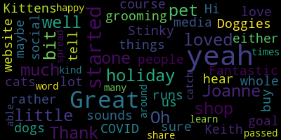

[Callahan]: Hi, I'm here with Joanne Keith, who runs Stinky's Kittens and Doggies 2. Thank you, Joanne, so much for being here.
[SPEAKER_00]: Thank you.
[Callahan]: Of course. So yeah, I would love to hear a little bit about your shop and about when it started and how you started it and maybe a little bit about you as well.
[SPEAKER_00]: Well, I started out of my home 25 years ago. Wow. Yeah, yeah. Wow. And then people will complain I was doing animals in my apartments. So 911 I opened up stinkies kittens and doggies to I don't ask me why it's crazy, but I used to show a lot of cats and Miss Stinky was my main cat that I show there. There was a Miss Stinky, she was a black Kimmy. And I used to get a lot of awards. I went to CFF, I went to New York, I showed her and I got into cats. Then the rent went up, so I ended up over here in Somerville, which I loved a lot. I love the people. It's a good community. And we added more stuff, giftware and unique stuff. I'm looking around right now. And we do a lot of cat grooming. We do love dogs, too, so we do dog grooming. We used to do in-home cat and exotic animal sitting service, but with COVID, it's on hold right now. We only do it for a few of the doctors and lawyers. That's about it. I don't know what else to say. I'm just very grateful that I'm still open. Yeah, absolutely.
[Callahan]: How has it been since COVID started?
[SPEAKER_00]: How's it been? I lost about 10 of my employees. I'm down to three, which is really, I miss them all. I've had them since, I've been here 20 years. Wow. I've had most of them except for one for 20 years. And most of them are housewives, mothers, retirees, people in the community and that's a little extra money and just they just like doing it and we just just become a family so I've lost that a big chunk this year um because you can't go to home people are afraid it's it's just breaks my heart that I had to let them all go except for three so in between that we're starting our own online store which has been going great but every day I'm looking on the computer computer, computer, and it's really more tiring, but I'm grateful that we have that.
[Callahan]: Yeah, I'm sure you would rather be grooming cats and dogs.
[SPEAKER_00]: Right now it isn't too bad, but it's just the online, it's in the curbside, you got to keep up with it. Even on my day off, I hear my phone beep, beep, beep, beep, or somebody's calling me and we, can you deliver? I have to wait in line at the post office, I got to go to FedEx, or my guy right now, he's going to USPS Staples store with these packages. And it's totally different, but I'm grateful that people are buying. But it's an everyday thing, which I didn't know what online shopping is. Everybody thinks, oh, Amazon is the greatest. Now, small business, that this is weird. I've talked to a lot of people doing it. And it's a day to day 24 seven, just getting everything ready, especially now before Christmas.
[Callahan]: So it sounds like there are a lot of things that people could buy from you for the holidays if they have loved ones who either have a pet or if they have a loved one who is a pet.
[SPEAKER_00]: If they have pets, we have a lot of unique stuff. I'm not sure if I could bring the tablet around in a minute. And we have mugs, dishes, bar towels. Is it all right if I move it around the show?
[SPEAKER_00]: We also have gift cards and they're good all year round. They're recyclable. They're reloadable.
[Adam Hurtubise]: I'm not sure if you can see all that. Oh, great.
[SPEAKER_00]: These are all bar towels. And then we have some potholders. What just came in, they're almost going out the door, is Mr. Tux and Baby Tux. Those are for the dogs. And then we have the Labradoodle. And what I mentioned earlier, let's see if I don't get it, was all the mugs.
[Adam Hurtubise]: Oh, great.
[SPEAKER_00]: And then that. And most of our stuff comes from a lot of local people. I try to support them. And that's why I'm coming out instead of the big stores.
[Callahan]: Fantastic. That's our whole goal is to- Oh yeah, it's like,
[SPEAKER_00]: It has to, it has to.
[Callahan]: Yeah, great. So tell us the website and any social media you have.
[SPEAKER_00]: Oh yeah, if you go on to www.stinkieskittens-doggies2.com, go on there and you'll see the online store. Hit that and we'll take you through everything. Not just the giftware I just showed, but everything we carry from food, litter, litter boxes, collars, the works. and we do special orders and right now we have a cutoff date in another week I think December 18th but we do a lot of orders if you want a big bag we'll we'll get it for you fantastic and we don't charge anybody in Somerville for delivery so oh yeah just for the support you know that's great yeah we're really grateful yeah we're very grateful
[Callahan]: Yeah, I'm so happy to have been able to kind of catch you and learn more about you. I've passed by the shop so many times.
[SPEAKER_00]: Yeah, there was a stinky. Everybody thinks she's a little myth, but no, she was great to me. Very good.
[Callahan]: Great. Well, thank you so much.
[SPEAKER_00]: Thank you.
[Callahan]: We'll share it around, spread the word, and have a great holiday.
[SPEAKER_00]: Yes, and I wish you the same.
|
total time: 1.01 minutes total words: 184  |
|||
{kind=link}